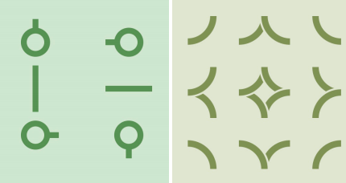

曾经有一款流行的游戏，叫做InfinityLoop，先来简单的介绍一下这个游戏:
游戏在一个n×m的网格状棋盘上进行，其中有些小方格中会有水管，水管可能在方格某些方向的边界的中点有接口
，所有水管的粗细都相同，所以如果两个相邻方格的公共边界的中点都有接头，那么可以看作这两个接头互相连接
。水管有以下15种形状：

游戏开始时，棋盘中水管可能存在漏水的地方。
形式化地:如果存在某个接头，没有和其它接头相连接，那么它就是一个漏水的地方。
玩家可以进行一种操作：选定一个含有非直线型水管的方格，将其中的水管绕方格中心顺时针或逆时针旋转90度。
直线型水管是指左图里中间一行的两种水管。
现给出一个初始局面，请问最少进行多少次操作可以使棋盘上不存在漏水的地方。